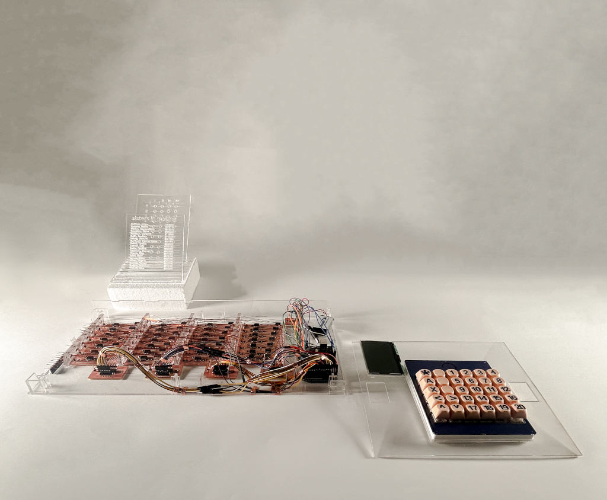
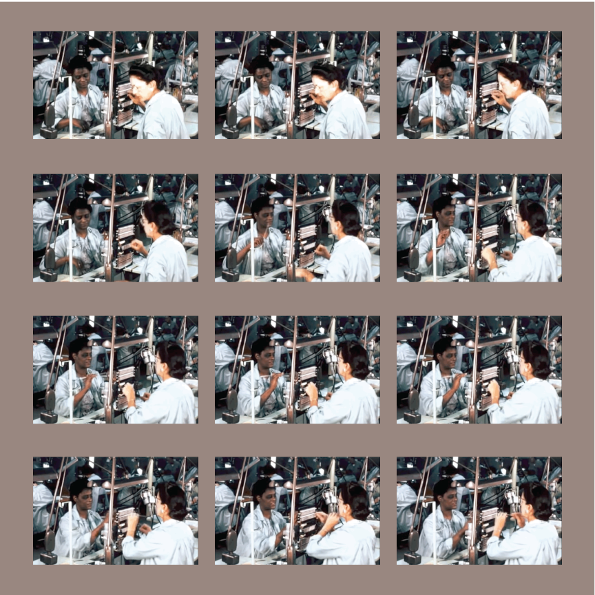
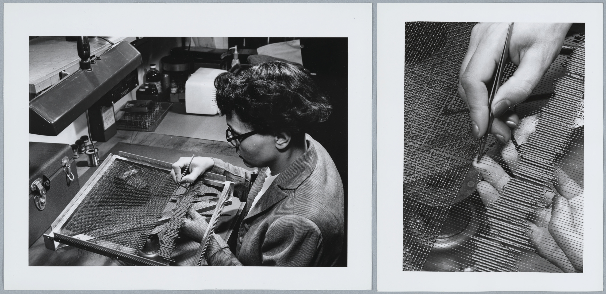
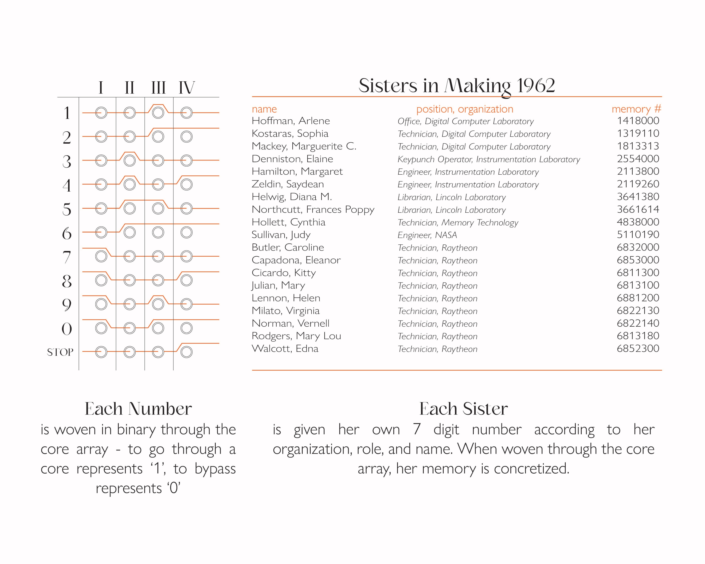
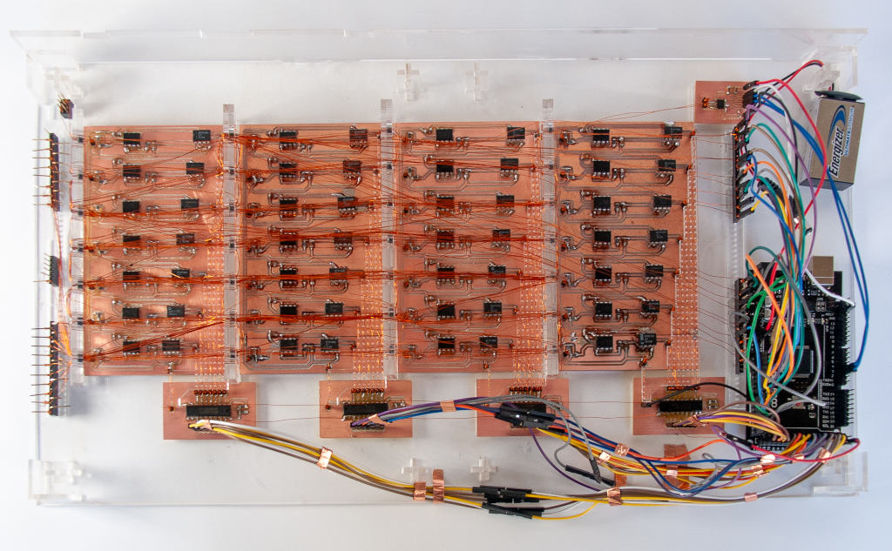
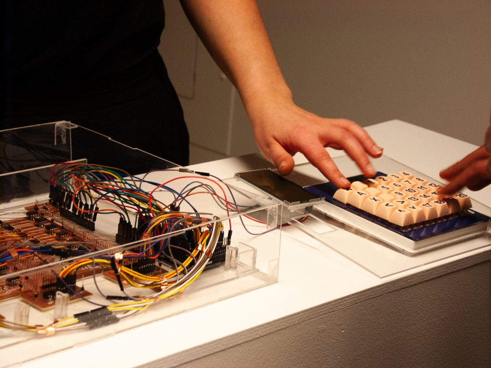
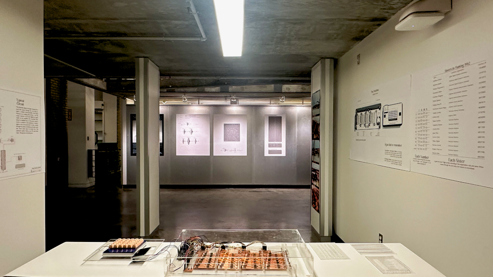
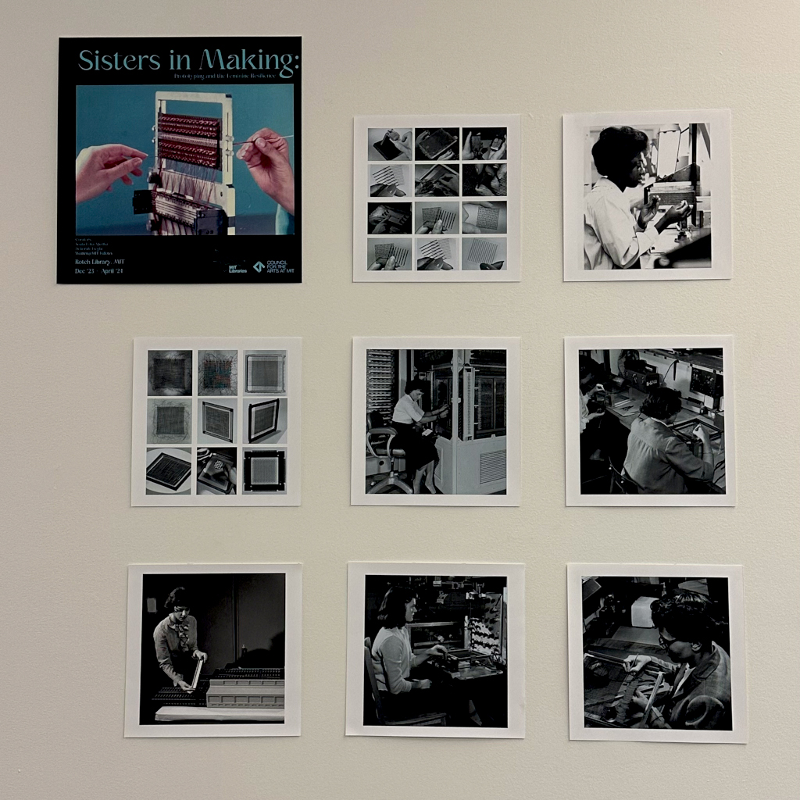
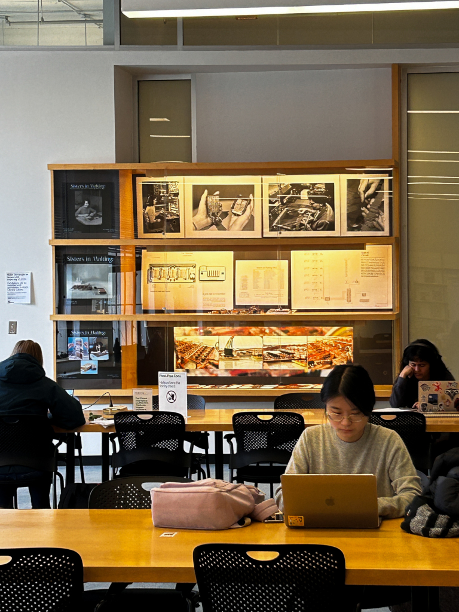

prototyping and the feminine resilience

this is a memory disguised as a machine.
it is part of a research and archival endeavour undertaken by déborah tsogbé and soala ajienka in Fall 2023
through MIT Distinctive Collections' Women@MIT Fellowship.

the endeavour focused on physical, intellectual, and social efforts made by women working across MIT & commercial partner labs in contribution to the success of the 1969 Apollo 11 moon landing.

of special interest were the textile and handcraft skills put to use by 'rope mothers' in order to fabricate the core rope memory which was essential to the operation of the command module. many of the women were pulled from textile and watchmaking factories in the Cambridge, MA area.


the memory dialer (above), fabricated by déborah, is modelled after the pivotal core rope technology. it holds the names of 19 woman who were particularly notable in Apollo 11 operations.




the endeavour culminated in an exhibition in MIT Rotch Library from January to April 2024.